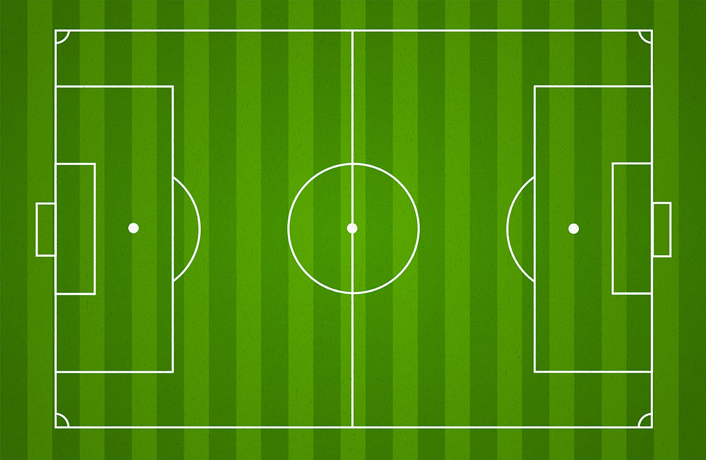
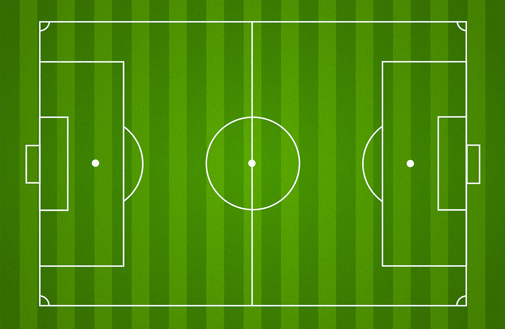

This is the about page For Soccer
Soccer is a team sport played between two teams of 11 players who use their feet to propel a ball around a field known as a "pitch" The objective of the game is to score more goals than the opposing team by moving the ball beyond the goal line into the rectangle shaped net defended by the opposing team. Traditionally, the game has been played over two 45-minute halves,for a total match time of 90 minutes. With an estimated 250 million players active in over 200 countries and territories, it is considered the world's most popular sport.
Learn more about soccer HERE
 

Image of soccer field (pitch)
In the game of socer there are many leagues and tournaments where teams all around the world compete against each other to win trophies and fame. The biggest soccer tournament in the world is the Fifa World Cup where countries play soccer against eachother. The Fifa World Cup tournament happens every 4 years the first world cup happened in 1930 the latest world cup was the 2022 qatar world cup where the Team Argentina won the world cup
Learn more about the Fifa world cup HERE
Image of the 2022 fifa world cup logo

Lionel Messi raising the Fifa world cup trophy with the argentina team cheering around him after there Victory against Team France

There are many leagues in the sport of soccer the biggest soccer teams and leagues are found in Europe